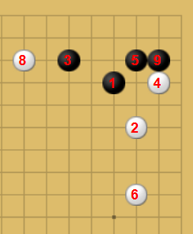
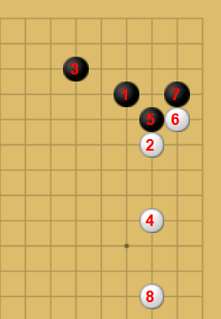
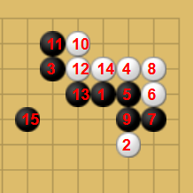
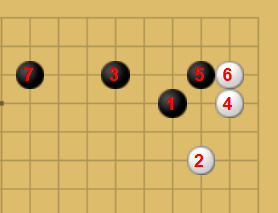

桂馬の定石の例
「桂馬」と聞いて将棋が出てきましたか？その通り、将棋の桂馬です。

-
①
スタンダードな型だと思います
- ・黒の目的：中央から左辺にかけての広大な勢力（模様）をつくる
- ・白の目的：黒の模様作戦を妨害しつつ、実質的な地を確保する
黒側は壁を築くことで壮大な模様をつくりましたが、 まだ「得点」となったわけではないため白側に模様を消されてただの壁にならないように立ち回る必要があります。
白側は手堅く安定していますが、黒をうまく捌けないと攻められたときに窮屈な思いをします。
-
②
非常に戦闘的な手になり得る定石です
- ・黒の目的：右上隅の自分の石を安定させながら、2と4のような白側の弱い石を攻めて、盤面全体の主導権を握る
- ・白の目的：右上隅で戦いを起こして黒の模様化を牽制しつつ自石を安定させ、盤面全体のバランスを取る
この盤面のポイントは白の8番です。5~7手目まで右上で戦いが起きているにもかかわらず白は別のところに赴いてしまいました。 これは手抜きと言うテクニックで、現在戦っているところよりも手を付けたほうが良い場所を見つけたときにそちらの利益を取りに行くというものです。
この判断をするためには、どこにどれくらいの利益があるのか目算できるようになる必要があるため、読みの力や実戦経験の量が勝敗を左右する要素になってきます。
-
③
桂馬+三三みたいな手ですね
- ・黒の目的：隅の地を白に与える代わりに、外側に勢力を築きその勢力を後ろ盾に盤面全体をリードする
- ・白の目的：黒に大きな勢力を与えることを覚悟の上で、手堅く確実な地を確保する
黒の目的はまんま三三の定石ですね。しかし白の2が鬱陶しいため、いかにうまく白を無力化しつつ勢力を拡大していくのかということは黒側の頑張りどころです。
白側はやはりいかに白の2を有効活用するかですね。最終的に取られたとしても代わりの陣地を奪い取る（例えば画像の右下あたりの陣地）ことが出来れば白側の勝利です。
-
④
スタンダードな型だと思います（part2）
- ・黒の目的：上辺に築いた石の壁を背景にして、左辺に大きな模様を広げる
- ・白の目的：黒の模様作戦を制限しながら、右上隅に手堅い地を確保する
黒の1があることによって白の持っている地よりも多く感じますね。それに加えて左下に向かって大きな模様が作れそうな気配がしています。 この時点で先手を持っている白は「黒の模様を消しに行く」or「白の陣地を広げていく」の2択になりそうです。
判断基準としては右下側にあらかじめ白の勢力が待機しているのなら前者、そうでなければ後者になりそうです。 また、各々の棋風で決めてしまってもよいのかもしれません。そうなれば相手との相性勝負ということになりますね！